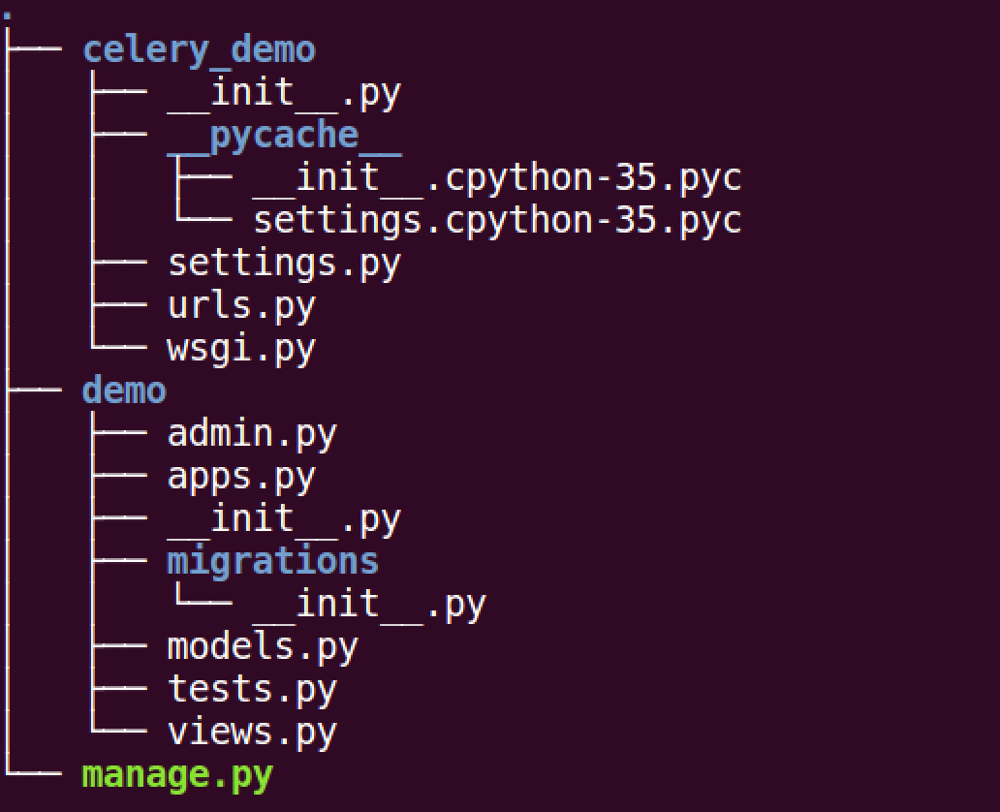
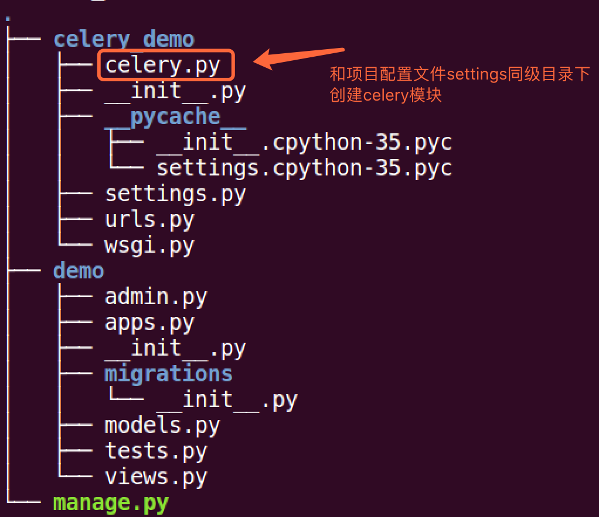
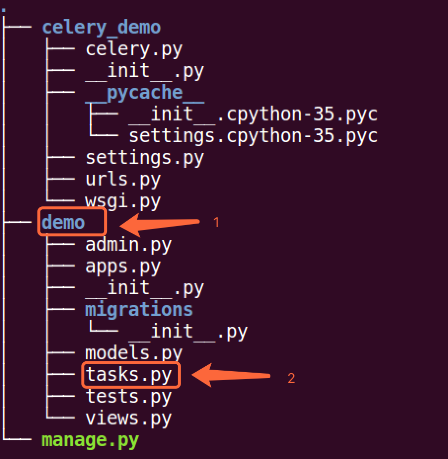
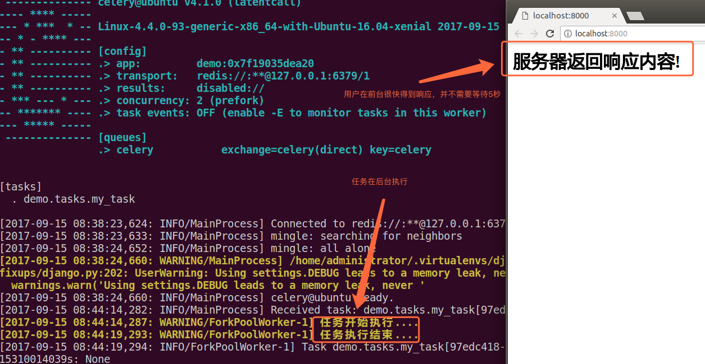

1. 配置celery
创建django项目celery_demo, 创建应用demo:
django-admin startproject celery_demo
python manage.py startapp demo

在celery_demo模块中创建celery.py模块, 文件目录为:

celery.py模块内容为:
from celery import Celery
from django.conf import settings
import os
# 为celery设置环境变量
os.environ.setdefault('DJANGO_SETTINGS_MODULE', 'celery_demo.settings')
# 创建应用
app = Celery("demo")
# 配置应用
app.conf.update(
# 配置broker, 这里我们用redis作为broker
BROKER_URL='redis://:332572@127.0.0.1:6379/1',
)
# 设置app自动加载任务
# 从已经安装的app中查找任务
app.autodiscover_tasks(settings.INSTALLED_APPS)
在应用demo引用创建tasks.py模块, 文件目录为: 
我们在文件内创建一个任务函数my_task:
from celery_demo.celery import app
import time
# 加上app对象的task装饰器
# 此函数为任务函数
@app.task
def my_task():
print("任务开始执行....")
time.sleep(5)
print("任务执行结束....")
在views.py模块中创建视图index:
from django.shortcuts import render
from django.http import HttpResponse
from .tasks import my_task
def index(request):
# 将my_task任务加入到celery队列中
# 如果my_task函数有参数，可通过delay()传递
# 例如 my_task(a, b), my_task.delay(10, 20)
my_task.delay()
return HttpResponse("<h1>服务器返回响应内容!</h1>")
在celey_demo/settings.py配置视图路由:
from django.conf.urls import url
from django.contrib import admin
from demo.views import index
urlpatterns = [
url(r'^admin/', admin.site.urls),
url(r'^$', index),
]
创建worker等待处理celery队列中任务, 在终端执行命令:
celery -A celery_demo worker -l info
 启动django测试服务器：
启动django测试服务器：
python manage.py runserver
